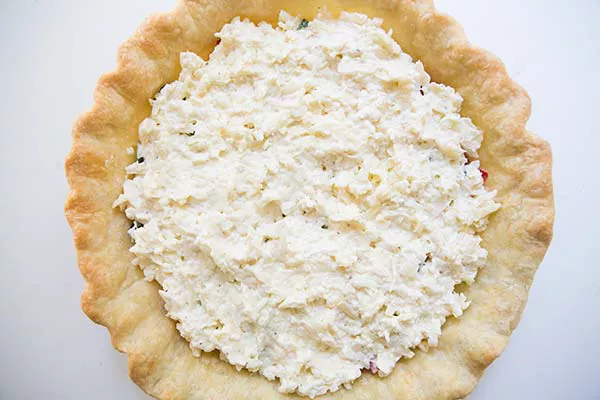

Ingredients:
-1 9-inch pie shell (see pie crust recipe for homemade version)
-1/2 cup chopped yellow or red onion (about 1/3 onion, diced)
-3-4 tomatoes, cut in half horizontally, squeezed to remove excess juice, roughly chopped, to yield approximately 3 cups (700 ml) chopped tomatoes
-1/2 teaspoon kosher salt
-1/4 cup sliced basil (about 8 large leaves)*
-21/2 cup (120 ml) mayonnaise
-1 teaspoon (or more to taste) of Frank's Hot Sauce (or Tabasco)
Method:
1-Pre-bake the crust: Preheat your oven to 350°F (175°C).
If you are using a store-bought pie shell, follow the directions on the package for pre-baking, or pre-bake it in the oven for about 8 to 10 minutes (a little longer for a frozen pie shell), until lightly browned.
If you are using a homemade crust, freeze the crust first, then press a sheet of aluminum foil into the crust to keep the sides of the pie crust from falling down as it cooks. Fill the pie with pie weights such as dry beans or rice to help hold the foil in place.
Pre-bake the homemade crust for 15 minutes, then remove the foil, use the tines of a fork to poke a few small holes in the bottom of the crust (for venting), and bake for 10 more minutes.
2-Salt and drain the tomatoes: Lightly salt the chopped tomatoes and set them in a colander over a bowl to drain while you are pre-baking the crust.
Squeeze as much moisture as you can out of the chopped tomatoes, using either paper towels, a clean dish towel, or a potato ricer.
3-Layer pre-baked pie shell with onions, tomatoes, basil: Sprinkle a layer of chopped onion over the bottom of your pre-baked pie crust shell.
Spread the drained chopped tomatoes over the onions. Sprinkle the sliced basil over the tomatoes.
4-Make cheese mixture, spread over tomatoes:
In a medium bowl, mix together the grated cheese, mayonnaise, Tabasco, a sprinkling of freshly ground black pepper.
The mixture should be the consistency of a gooey snowball. Spread the cheese mixture over the tomatoes.

5-
Bake: Place in oven and bake at 350°F (175°C) until browned and bubbly, anywhere from 25 to 45 minutes.